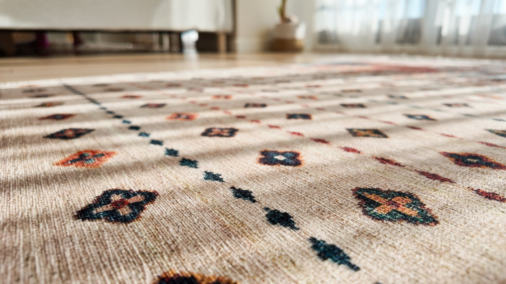
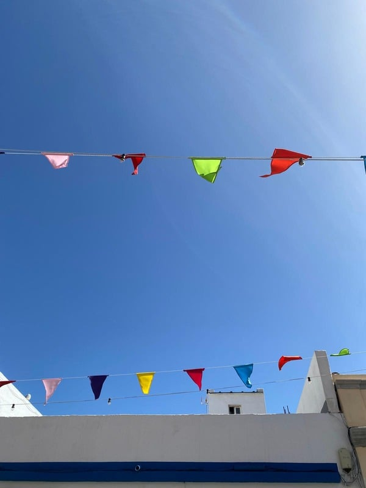

psychoterapie a mindfulness
Co se stane, když do svého života pozveme vřelost, zvídavost a zájem?

o mně

Jsem psycholožka a psychoterapeutka ve výcviku (Integrace v psychoterapii). Absolvovala jsem výcvik pro učitele kurzů všímavosti Mindfulness-Based Stress Reduction (MBSR) na Instutute for Mindfulness-Based Approaches (IMA, Berlín). Mám za sebou výcvik telefonické krizové intervence a řadu dalšího vzdělávání. Svou práci pravidelně superviduji a nadále se vzdělávám. Jsem kandidátní členkou Asociace pro psychoterapii.
V současnosti pracuji jako terapeutka v Terapeutickém přístavu v Praze a lektoruji kurzy a workshopy všímavosti (mindfulness). S kolegy z výcviku pravidelně pořádáme psychoterapeutickou konferenci Mezi běhy. Píšu Koláž — pravidelnou měsíční mozaiku informací, tipů a zamyšlení ze světa všímavosti (mindfulness), psychologie a psychoterapie.
Mám dvě děti a milion zájmů, a snažím se nacházet lehkost v žonglování se vším, čím je můj život obdařen. Je mi krásně u ohňů, při zpívání, ve studené vodě a v lese, a taky když čtu a píšu.
můj přístup
Vycházím z přístupu integrativní psychoterapie, která staví na tom, co se ukazuje jako podpůrné a funkční napříč různými psychoterapeutickými směry. Hlavními pilíři mé práce jsou terapeutický vztah a všímavost — ke klientovi, k sobě a k tomu, co se odehrává ve společném prostoru.
Co tedy skutečně v terapii dělám? Držím prostor, všímám si, co se děje tady a teď, a do vztahu s klientem vnáším to, co vidím. Společně se snažíme vytvořit dobré podmínky pro to, aby mohla vzniknout terapeutická změna. Věřím, že jasně vidět a uznat to, co vidím (ať už se mi líbí, nebo ne), je tím, co změnu umožňuje.
Důležitými hodnotami jsou pro mě lidskost, otevřenost, vřelost a zvídavost. Myslím, že se propisují do způsobu, jakým pracuji.
